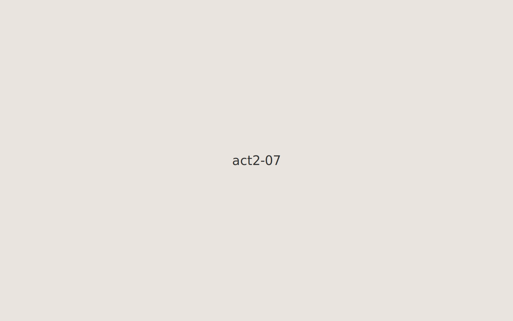
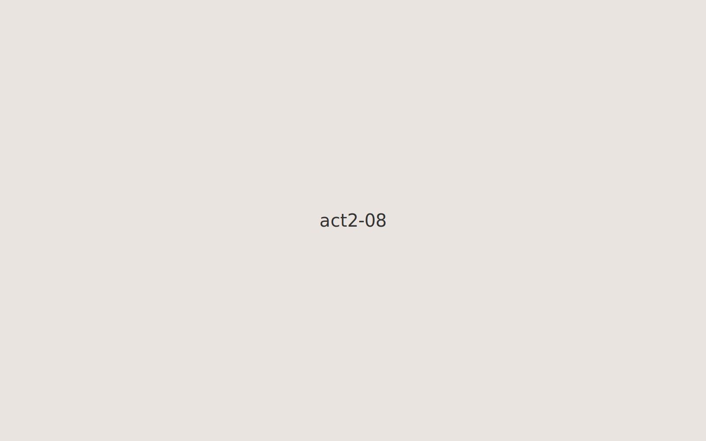

Basement arrival.Shared blanket and first meals.Snowy street outside the building.Worn mittens and small victories.Community notice board.First job certificate.

A small celebration.

Warm kitchen, first recipes adapted.New friend on a cold morning.